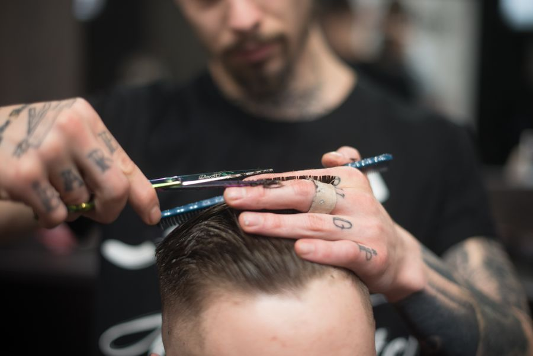
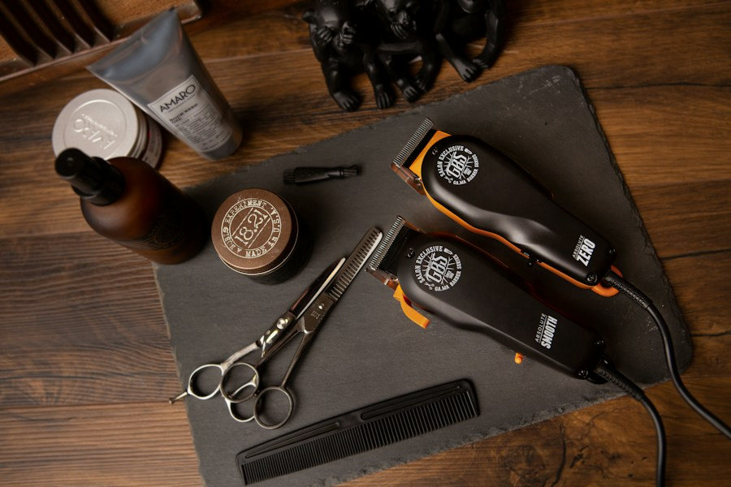

МУЖСКИЕ СТРИЖКИ. КАЛИНИНГРАД.
ВЫМЫШЛЕННЫЙ БРЕНД / ПОРТФОЛИО В КРЕСЛЕ
В КРЕСЛЕМУЖСКАЯ СТРИЖКА / 60 МИНУТХОРОШАЯ
ХОРОШАЯ
СТРИЖКА.
И ТОЧКА.
Приходи с референсом или своей обычной стрижкой. Длину и форму обсудим у зеркала.
НОЖНИЦЫ / МАШИНКА / БРИТВАУСЛУГИ И ЦЕНЫ ↓
КОРОЧЕ ПО БОКАМ. ПОДРОБНЕЕ — НИЖЕ.
ЛИСТАЙ ↓Что
и почём.
Мытьё и укладка входят в стрижку.
С формой определимся до начала.

Цены придуманы для демонстрации интерфейса.
СНАЧАЛА
ОБСУДИМ.
ПОТОМ
ПОДСТРИЖЁМ.
Сколько убрать? Оставить длину сверху? Как обычно укладываешь? Пара вопросов у зеркала — и можно начинать.

Примерно
вот так.
Не обязательно знать название стрижки.
Понравилась форма — сохрани фото.
Иллюстрации направлений стиля. Концепт не связан с действующей парикмахерской.
ДЛЯ ТЕХ, КОМУ ПОРА.
СТРИЖКА / БОРОДА / УХОД
ЗДЕСЬ МОЖНО ПРОЙТИ ДЕМО ЗАПИСИ.